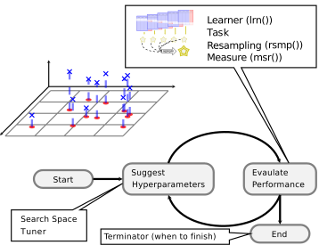

3.1 Hyperparameter Tuning
Hyperparameters are second-order parameters of machine learning models that, while often not explicitly optimized during the model estimation process, can have an important impact on the outcome and predictive performance of a model. Typically, hyperparameters are fixed before training a model. However, because the output of a model can be sensitive to the specification of hyperparameters, it is often recommended to make an informed decision about which hyperparameter settings may yield better model performance. In many cases, hyperparameter settings may be chosen a priori, but it can be advantageous to try different settings before fitting your model on the training data. This process is often called model ‘tuning’.
Hyperparameter tuning is supported via the mlr3tuning extension package. Below you can find an illustration of the process:

At the heart of mlr3tuning are the R6 classes:
TuningInstanceSingleCrit,TuningInstanceMultiCrit: These two classes describe the tuning problem and store the results.Tuner: This class is the base class for implementations of tuning algorithms.
3.1.1 The TuningInstance* Classes
The following sub-section examines the optimization of a simple classification tree on the Pima Indian Diabetes data set.
## <TaskClassif:pima> (768 x 9)
## * Target: diabetes
## * Properties: twoclass
## * Features (8):
## - dbl (8): age, glucose, insulin, mass, pedigree, pregnant, pressure,
## tricepsWe use the classification tree from rpart and choose a subset of the hyperparameters we want to tune. This is often referred to as the “tuning space”.
## <ParamSet>
## id class lower upper levels default value
## 1: minsplit ParamInt 1 Inf 20
## 2: minbucket ParamInt 1 Inf <NoDefault[3]>
## 3: cp ParamDbl 0 1 0.01
## 4: maxcompete ParamInt 0 Inf 4
## 5: maxsurrogate ParamInt 0 Inf 5
## 6: maxdepth ParamInt 1 30 30
## 7: usesurrogate ParamInt 0 2 2
## 8: surrogatestyle ParamInt 0 1 0
## 9: xval ParamInt 0 Inf 10 0
## 10: keep_model ParamLgl NA NA TRUE,FALSE FALSEHere, we opt to tune two parameters:
- The complexity
cp - The termination criterion
minsplit
The tuning space needs to be bounded, therefore one has to set lower and upper bounds:
library("paradox")
tune_ps = ParamSet$new(list(
ParamDbl$new("cp", lower = 0.001, upper = 0.1),
ParamInt$new("minsplit", lower = 1, upper = 10)
))
tune_ps## <ParamSet>
## id class lower upper levels default value
## 1: cp ParamDbl 0.001 0.1 <NoDefault[3]>
## 2: minsplit ParamInt 1.000 10.0 <NoDefault[3]>Next, we need to specify how to evaluate the performance.
For this, we need to choose a resampling strategy and a performance measure.
Finally, one has to select the budget available, to solve this tuning instance.
This is done by selecting one of the available Terminators:
- Terminate after a given time (
TerminatorClockTime) - Terminate after a given amount of iterations (
TerminatorEvals) - Terminate after a specific performance is reached (
TerminatorPerfReached) - Terminate when tuning does not improve (
TerminatorStagnation) - A combination of the above in an ALL or ANY fashion (
TerminatorCombo)
For this short introduction, we specify a budget of 20 evaluations and then put everything together into a TuningInstanceSingleCrit:
library("mlr3tuning")
evals20 = trm("evals", n_evals = 20)
instance = TuningInstanceSingleCrit$new(
task = task,
learner = learner,
resampling = hout,
measure = measure,
search_space = tune_ps,
terminator = evals20
)
instance## <TuningInstanceSingleCrit>
## * State: Not optimized
## * Objective: <ObjectiveTuning:classif.rpart_on_pima>
## * Search Space:
## <ParamSet>
## id class lower upper levels default value
## 1: cp ParamDbl 0.001 0.1 <NoDefault[3]>
## 2: minsplit ParamInt 1.000 10.0 <NoDefault[3]>
## * Terminator: <TerminatorEvals>
## * Terminated: FALSE
## * Archive:
## <ArchiveTuning>
## Null data.table (0 rows and 0 cols)To start the tuning, we still need to select how the optimization should take place.
In other words, we need to choose the optimization algorithm via the Tuner class.
3.1.2 The Tuner Class
The following algorithms are currently implemented in mlr3tuning:
- Grid Search (
TunerGridSearch) - Random Search (
TunerRandomSearch) (Bergstra and Bengio 2012) - Generalized Simulated Annealing (
TunerGenSA) - Non-Linear Optimization (
TunerNLoptr)
In this example, we will use a simple grid search with a grid resolution of 5.
Since we have only numeric parameters, TunerGridSearch will create an equidistant grid between the respective upper and lower bounds.
As we have two hyperparameters with a resolution of 5, the two-dimensional grid consists of \(5^2 = 25\) configurations.
Each configuration serves as a hyperparameter setting for the previously defined Learner and triggers a 3-fold cross validation on the task.
All configurations will be examined by the tuner (in a random order), until either all configurations are evaluated or the Terminator signals that the budget is exhausted.
3.1.3 Triggering the Tuning
To start the tuning, we simply pass the TuningInstanceSingleCrit to the $optimize() method of the initialized Tuner.
The tuner proceeds as follows:
- The
Tunerproposes at least one hyperparameter configuration (theTunermay propose multiple points to improve parallelization, which can be controlled via the settingbatch_size). - For each configuration, the given
Learneris fitted on theTaskusing the providedResampling. All evaluations are stored in the archive of theTuningInstanceSingleCrit. - The
Terminatoris queried if the budget is exhausted. If the budget is not exhausted, restart with 1) until it is. - Determine the configuration with the best observed performance.
- Store the best configurations as result in the instance object.
The best hyperparameter settings (
$result_learner_param_vals) and the corresponding measured performance ($result_y) can be accessed from the instance.
## INFO [19:27:19.330] Starting to optimize 2 parameter(s) with '<OptimizerGridSearch>' and '<TerminatorEvals>'
## INFO [19:27:19.365] Evaluating 1 configuration(s)
## INFO [19:27:19.706] Result of batch 1:
## INFO [19:27:19.709] cp minsplit classif.ce uhash
## INFO [19:27:19.709] 0.1 10 0.2969 0c0c61c7-3f48-43c3-87b1-9f58cefad8e4
## INFO [19:27:19.712] Evaluating 1 configuration(s)
## INFO [19:27:19.909] Result of batch 2:
## INFO [19:27:19.912] cp minsplit classif.ce uhash
## INFO [19:27:19.912] 0.07525 10 0.2969 52ea1121-0426-4814-8299-b83aefdaf37d
## INFO [19:27:19.914] Evaluating 1 configuration(s)
## INFO [19:27:20.022] Result of batch 3:
## INFO [19:27:20.025] cp minsplit classif.ce uhash
## INFO [19:27:20.025] 0.1 8 0.2969 af16984b-b8c4-49d6-9622-86fc96c5bcb7
## INFO [19:27:20.028] Evaluating 1 configuration(s)
## INFO [19:27:20.136] Result of batch 4:
## INFO [19:27:20.139] cp minsplit classif.ce uhash
## INFO [19:27:20.139] 0.001 8 0.3086 461841dd-b83e-4b72-84c0-8114c701595e
## INFO [19:27:20.142] Evaluating 1 configuration(s)
## INFO [19:27:20.232] Result of batch 5:
## INFO [19:27:20.235] cp minsplit classif.ce uhash
## INFO [19:27:20.235] 0.0505 1 0.2617 1a756835-f62b-41c2-94c0-d2bc9e5b4ace
## INFO [19:27:20.237] Evaluating 1 configuration(s)
## INFO [19:27:20.330] Result of batch 6:
## INFO [19:27:20.332] cp minsplit classif.ce uhash
## INFO [19:27:20.332] 0.0505 3 0.2617 454949b8-d0fd-4f18-b69a-127bd8d8f5ec
## INFO [19:27:20.335] Evaluating 1 configuration(s)
## INFO [19:27:20.426] Result of batch 7:
## INFO [19:27:20.428] cp minsplit classif.ce uhash
## INFO [19:27:20.428] 0.07525 8 0.2969 f8eebabd-4195-4a21-b2ae-37e417170ab3
## INFO [19:27:20.431] Evaluating 1 configuration(s)
## INFO [19:27:20.525] Result of batch 8:
## INFO [19:27:20.527] cp minsplit classif.ce uhash
## INFO [19:27:20.527] 0.0505 8 0.2617 5e9c77c0-924d-4e32-9631-d24fb5c1f55e
## INFO [19:27:20.530] Evaluating 1 configuration(s)
## INFO [19:27:20.621] Result of batch 9:
## INFO [19:27:20.623] cp minsplit classif.ce uhash
## INFO [19:27:20.623] 0.02575 8 0.2617 5d6f7205-8a65-4b3e-9950-61fca92ece34
## INFO [19:27:20.626] Evaluating 1 configuration(s)
## INFO [19:27:20.722] Result of batch 10:
## INFO [19:27:20.724] cp minsplit classif.ce uhash
## INFO [19:27:20.724] 0.001 10 0.2695 f37d5c92-4f17-407a-81ab-5fb2cc190ec0
## INFO [19:27:20.727] Evaluating 1 configuration(s)
## INFO [19:27:20.818] Result of batch 11:
## INFO [19:27:20.820] cp minsplit classif.ce uhash
## INFO [19:27:20.820] 0.02575 3 0.2617 ed6a8234-185a-4244-b9b5-425aa74aade5
## INFO [19:27:20.823] Evaluating 1 configuration(s)
## INFO [19:27:20.915] Result of batch 12:
## INFO [19:27:20.918] cp minsplit classif.ce uhash
## INFO [19:27:20.918] 0.1 3 0.2969 7297ae9a-3cee-4948-8b38-6347213b55b9
## INFO [19:27:20.920] Evaluating 1 configuration(s)
## INFO [19:27:21.011] Result of batch 13:
## INFO [19:27:21.013] cp minsplit classif.ce uhash
## INFO [19:27:21.013] 0.1 1 0.2969 736f254b-4f8e-4558-a1fa-17e619f20e04
## INFO [19:27:21.016] Evaluating 1 configuration(s)
## INFO [19:27:21.110] Result of batch 14:
## INFO [19:27:21.112] cp minsplit classif.ce uhash
## INFO [19:27:21.112] 0.0505 5 0.2617 7088039f-63cc-41fa-b1fa-485e4321fcf8
## INFO [19:27:21.115] Evaluating 1 configuration(s)
## INFO [19:27:21.205] Result of batch 15:
## INFO [19:27:21.208] cp minsplit classif.ce uhash
## INFO [19:27:21.208] 0.1 5 0.2969 1bfe62a7-a20a-4cbe-a980-2268d7b663d8
## INFO [19:27:21.210] Evaluating 1 configuration(s)
## INFO [19:27:21.310] Result of batch 16:
## INFO [19:27:21.312] cp minsplit classif.ce uhash
## INFO [19:27:21.312] 0.0505 10 0.2617 4270a552-4f0c-421f-9bed-cda4cfbfc6c7
## INFO [19:27:21.315] Evaluating 1 configuration(s)
## INFO [19:27:21.404] Result of batch 17:
## INFO [19:27:21.406] cp minsplit classif.ce uhash
## INFO [19:27:21.406] 0.07525 1 0.2969 95af791c-e4d0-46b2-b222-8e38a0e9cf0e
## INFO [19:27:21.409] Evaluating 1 configuration(s)
## INFO [19:27:21.503] Result of batch 18:
## INFO [19:27:21.505] cp minsplit classif.ce uhash
## INFO [19:27:21.505] 0.07525 5 0.2969 dcf6769c-bd58-43cc-8d33-6f854d92b669
## INFO [19:27:21.508] Evaluating 1 configuration(s)
## INFO [19:27:21.598] Result of batch 19:
## INFO [19:27:21.600] cp minsplit classif.ce uhash
## INFO [19:27:21.600] 0.001 5 0.2734 1f143e01-1397-4741-b691-2c2ff4953f36
## INFO [19:27:21.603] Evaluating 1 configuration(s)
## INFO [19:27:21.701] Result of batch 20:
## INFO [19:27:21.703] cp minsplit classif.ce uhash
## INFO [19:27:21.703] 0.001 3 0.3047 7da5b0eb-9a6d-4afe-b051-0493931f1c17
## INFO [19:27:21.711] Finished optimizing after 20 evaluation(s)
## INFO [19:27:21.712] Result:
## INFO [19:27:21.714] cp minsplit learner_param_vals x_domain classif.ce
## INFO [19:27:21.714] 0.0505 1 <list[3]> <list[2]> 0.2617## cp minsplit learner_param_vals x_domain classif.ce
## 1: 0.0505 1 <list[3]> <list[2]> 0.2617## $xval
## [1] 0
##
## $cp
## [1] 0.0505
##
## $minsplit
## [1] 1## classif.ce
## 0.2617One can investigate all resamplings which were undertaken, as they are stored in the archive of the TuningInstanceSingleCrit and can be accessed through $data() method:
## cp minsplit classif.ce uhash x_domain
## 1: 0.10000 10 0.2969 0c0c61c7-3f48-43c3-87b1-9f58cefad8e4 <list[2]>
## 2: 0.07525 10 0.2969 52ea1121-0426-4814-8299-b83aefdaf37d <list[2]>
## 3: 0.10000 8 0.2969 af16984b-b8c4-49d6-9622-86fc96c5bcb7 <list[2]>
## 4: 0.00100 8 0.3086 461841dd-b83e-4b72-84c0-8114c701595e <list[2]>
## 5: 0.05050 1 0.2617 1a756835-f62b-41c2-94c0-d2bc9e5b4ace <list[2]>
## 6: 0.05050 3 0.2617 454949b8-d0fd-4f18-b69a-127bd8d8f5ec <list[2]>
## 7: 0.07525 8 0.2969 f8eebabd-4195-4a21-b2ae-37e417170ab3 <list[2]>
## 8: 0.05050 8 0.2617 5e9c77c0-924d-4e32-9631-d24fb5c1f55e <list[2]>
## 9: 0.02575 8 0.2617 5d6f7205-8a65-4b3e-9950-61fca92ece34 <list[2]>
## 10: 0.00100 10 0.2695 f37d5c92-4f17-407a-81ab-5fb2cc190ec0 <list[2]>
## 11: 0.02575 3 0.2617 ed6a8234-185a-4244-b9b5-425aa74aade5 <list[2]>
## 12: 0.10000 3 0.2969 7297ae9a-3cee-4948-8b38-6347213b55b9 <list[2]>
## 13: 0.10000 1 0.2969 736f254b-4f8e-4558-a1fa-17e619f20e04 <list[2]>
## 14: 0.05050 5 0.2617 7088039f-63cc-41fa-b1fa-485e4321fcf8 <list[2]>
## 15: 0.10000 5 0.2969 1bfe62a7-a20a-4cbe-a980-2268d7b663d8 <list[2]>
## 16: 0.05050 10 0.2617 4270a552-4f0c-421f-9bed-cda4cfbfc6c7 <list[2]>
## 17: 0.07525 1 0.2969 95af791c-e4d0-46b2-b222-8e38a0e9cf0e <list[2]>
## 18: 0.07525 5 0.2969 dcf6769c-bd58-43cc-8d33-6f854d92b669 <list[2]>
## 19: 0.00100 5 0.2734 1f143e01-1397-4741-b691-2c2ff4953f36 <list[2]>
## 20: 0.00100 3 0.3047 7da5b0eb-9a6d-4afe-b051-0493931f1c17 <list[2]>
## timestamp batch_nr
## 1: 2020-11-11 19:27:19 1
## 2: 2020-11-11 19:27:19 2
## 3: 2020-11-11 19:27:20 3
## 4: 2020-11-11 19:27:20 4
## 5: 2020-11-11 19:27:20 5
## 6: 2020-11-11 19:27:20 6
## 7: 2020-11-11 19:27:20 7
## 8: 2020-11-11 19:27:20 8
## 9: 2020-11-11 19:27:20 9
## 10: 2020-11-11 19:27:20 10
## 11: 2020-11-11 19:27:20 11
## 12: 2020-11-11 19:27:20 12
## 13: 2020-11-11 19:27:21 13
## 14: 2020-11-11 19:27:21 14
## 15: 2020-11-11 19:27:21 15
## 16: 2020-11-11 19:27:21 16
## 17: 2020-11-11 19:27:21 17
## 18: 2020-11-11 19:27:21 18
## 19: 2020-11-11 19:27:21 19
## 20: 2020-11-11 19:27:21 20In sum, the grid search evaluated 20/25 different configurations of the grid in a random order before the Terminator stopped the tuning.
The associated resampling iterations can be accessed in the BenchmarkResult:
## <BenchmarkResult> of 20 rows with 20 resampling runs
## nr task_id learner_id resampling_id iters warnings errors
## 1 pima classif.rpart holdout 1 0 0
## 2 pima classif.rpart holdout 1 0 0
## 3 pima classif.rpart holdout 1 0 0
## 4 pima classif.rpart holdout 1 0 0
## 5 pima classif.rpart holdout 1 0 0
## 6 pima classif.rpart holdout 1 0 0
## 7 pima classif.rpart holdout 1 0 0
## 8 pima classif.rpart holdout 1 0 0
## 9 pima classif.rpart holdout 1 0 0
## 10 pima classif.rpart holdout 1 0 0
## 11 pima classif.rpart holdout 1 0 0
## 12 pima classif.rpart holdout 1 0 0
## 13 pima classif.rpart holdout 1 0 0
## 14 pima classif.rpart holdout 1 0 0
## 15 pima classif.rpart holdout 1 0 0
## 16 pima classif.rpart holdout 1 0 0
## 17 pima classif.rpart holdout 1 0 0
## 18 pima classif.rpart holdout 1 0 0
## 19 pima classif.rpart holdout 1 0 0
## 20 pima classif.rpart holdout 1 0 0The uhash column links the resampling iterations to the evaluated configurations stored in instance$archive$data(). This allows e.g. to score the included ResampleResults on a different measure.
## uhash nr task task_id
## 1: 0c0c61c7-3f48-43c3-87b1-9f58cefad8e4 1 <TaskClassif[45]> pima
## 2: 52ea1121-0426-4814-8299-b83aefdaf37d 2 <TaskClassif[45]> pima
## 3: af16984b-b8c4-49d6-9622-86fc96c5bcb7 3 <TaskClassif[45]> pima
## 4: 461841dd-b83e-4b72-84c0-8114c701595e 4 <TaskClassif[45]> pima
## 5: 1a756835-f62b-41c2-94c0-d2bc9e5b4ace 5 <TaskClassif[45]> pima
## 6: 454949b8-d0fd-4f18-b69a-127bd8d8f5ec 6 <TaskClassif[45]> pima
## 7: f8eebabd-4195-4a21-b2ae-37e417170ab3 7 <TaskClassif[45]> pima
## 8: 5e9c77c0-924d-4e32-9631-d24fb5c1f55e 8 <TaskClassif[45]> pima
## 9: 5d6f7205-8a65-4b3e-9950-61fca92ece34 9 <TaskClassif[45]> pima
## 10: f37d5c92-4f17-407a-81ab-5fb2cc190ec0 10 <TaskClassif[45]> pima
## 11: ed6a8234-185a-4244-b9b5-425aa74aade5 11 <TaskClassif[45]> pima
## 12: 7297ae9a-3cee-4948-8b38-6347213b55b9 12 <TaskClassif[45]> pima
## 13: 736f254b-4f8e-4558-a1fa-17e619f20e04 13 <TaskClassif[45]> pima
## 14: 7088039f-63cc-41fa-b1fa-485e4321fcf8 14 <TaskClassif[45]> pima
## 15: 1bfe62a7-a20a-4cbe-a980-2268d7b663d8 15 <TaskClassif[45]> pima
## 16: 4270a552-4f0c-421f-9bed-cda4cfbfc6c7 16 <TaskClassif[45]> pima
## 17: 95af791c-e4d0-46b2-b222-8e38a0e9cf0e 17 <TaskClassif[45]> pima
## 18: dcf6769c-bd58-43cc-8d33-6f854d92b669 18 <TaskClassif[45]> pima
## 19: 1f143e01-1397-4741-b691-2c2ff4953f36 19 <TaskClassif[45]> pima
## 20: 7da5b0eb-9a6d-4afe-b051-0493931f1c17 20 <TaskClassif[45]> pima
## learner learner_id resampling
## 1: <LearnerClassifRpart[33]> classif.rpart <ResamplingHoldout[19]>
## 2: <LearnerClassifRpart[33]> classif.rpart <ResamplingHoldout[19]>
## 3: <LearnerClassifRpart[33]> classif.rpart <ResamplingHoldout[19]>
## 4: <LearnerClassifRpart[33]> classif.rpart <ResamplingHoldout[19]>
## 5: <LearnerClassifRpart[33]> classif.rpart <ResamplingHoldout[19]>
## 6: <LearnerClassifRpart[33]> classif.rpart <ResamplingHoldout[19]>
## 7: <LearnerClassifRpart[33]> classif.rpart <ResamplingHoldout[19]>
## 8: <LearnerClassifRpart[33]> classif.rpart <ResamplingHoldout[19]>
## 9: <LearnerClassifRpart[33]> classif.rpart <ResamplingHoldout[19]>
## 10: <LearnerClassifRpart[33]> classif.rpart <ResamplingHoldout[19]>
## 11: <LearnerClassifRpart[33]> classif.rpart <ResamplingHoldout[19]>
## 12: <LearnerClassifRpart[33]> classif.rpart <ResamplingHoldout[19]>
## 13: <LearnerClassifRpart[33]> classif.rpart <ResamplingHoldout[19]>
## 14: <LearnerClassifRpart[33]> classif.rpart <ResamplingHoldout[19]>
## 15: <LearnerClassifRpart[33]> classif.rpart <ResamplingHoldout[19]>
## 16: <LearnerClassifRpart[33]> classif.rpart <ResamplingHoldout[19]>
## 17: <LearnerClassifRpart[33]> classif.rpart <ResamplingHoldout[19]>
## 18: <LearnerClassifRpart[33]> classif.rpart <ResamplingHoldout[19]>
## 19: <LearnerClassifRpart[33]> classif.rpart <ResamplingHoldout[19]>
## 20: <LearnerClassifRpart[33]> classif.rpart <ResamplingHoldout[19]>
## resampling_id iteration prediction classif.acc
## 1: holdout 1 <PredictionClassif[19]> 0.7031
## 2: holdout 1 <PredictionClassif[19]> 0.7031
## 3: holdout 1 <PredictionClassif[19]> 0.7031
## 4: holdout 1 <PredictionClassif[19]> 0.6914
## 5: holdout 1 <PredictionClassif[19]> 0.7383
## 6: holdout 1 <PredictionClassif[19]> 0.7383
## 7: holdout 1 <PredictionClassif[19]> 0.7031
## 8: holdout 1 <PredictionClassif[19]> 0.7383
## 9: holdout 1 <PredictionClassif[19]> 0.7383
## 10: holdout 1 <PredictionClassif[19]> 0.7305
## 11: holdout 1 <PredictionClassif[19]> 0.7383
## 12: holdout 1 <PredictionClassif[19]> 0.7031
## 13: holdout 1 <PredictionClassif[19]> 0.7031
## 14: holdout 1 <PredictionClassif[19]> 0.7383
## 15: holdout 1 <PredictionClassif[19]> 0.7031
## 16: holdout 1 <PredictionClassif[19]> 0.7383
## 17: holdout 1 <PredictionClassif[19]> 0.7031
## 18: holdout 1 <PredictionClassif[19]> 0.7031
## 19: holdout 1 <PredictionClassif[19]> 0.7266
## 20: holdout 1 <PredictionClassif[19]> 0.6953Now the optimized hyperparameters can take the previously created Learner, set the returned hyperparameters and train it on the full dataset.
The trained model can now be used to make a prediction on external data.
Note that predicting on observations present in the task, should be avoided.
The model has seen these observations already during tuning and therefore results would be statistically biased.
Hence, the resulting performance measure would be over-optimistic.
Instead, to get statistically unbiased performance estimates for the current task, nested resampling is required.
3.1.4 Automating the Tuning
The AutoTuner wraps a learner and augments it with an automatic tuning for a given set of hyperparameters.
Because the AutoTuner itself inherits from the Learner base class, it can be used like any other learner.
Analogously to the previous subsection, a new classification tree learner is created.
This classification tree learner automatically tunes the parameters cp and minsplit using an inner resampling (holdout).
We create a terminator which allows 10 evaluations, and use a simple random search as tuning algorithm:
library("paradox")
library("mlr3tuning")
learner = lrn("classif.rpart")
tune_ps = ParamSet$new(list(
ParamDbl$new("cp", lower = 0.001, upper = 0.1),
ParamInt$new("minsplit", lower = 1, upper = 10)
))
terminator = trm("evals", n_evals = 10)
tuner = tnr("random_search")
at = AutoTuner$new(
learner = learner,
resampling = rsmp("holdout"),
measure = msr("classif.ce"),
search_space = tune_ps,
terminator = terminator,
tuner = tuner
)
at## <AutoTuner:classif.rpart.tuned>
## * Model: -
## * Parameters: xval=0
## * Packages: rpart
## * Predict Type: response
## * Feature types: logical, integer, numeric, factor, ordered
## * Properties: importance, missings, multiclass, selected_features,
## twoclass, weightsWe can now use the learner like any other learner, calling the $train() and $predict() method.
This time however, we pass it to benchmark() to compare the tuner to a classification tree without tuning.
This way, the AutoTuner will do its resampling for tuning on the training set of the respective split of the outer resampling.
The learner then undertakes predictions using the test set of the outer resampling.
This yields unbiased performance measures, as the observations in the test set have not been used during tuning or fitting of the respective learner.
This is called nested resampling.
To compare the tuned learner with the learner that uses default values, we can use benchmark():
grid = benchmark_grid(
task = tsk("pima"),
learner = list(at, lrn("classif.rpart")),
resampling = rsmp("cv", folds = 3)
)
# avoid console output from mlr3tuning
logger = lgr::get_logger("bbotk")
logger$set_threshold("warn")
bmr = benchmark(grid)
bmr$aggregate(msrs(c("classif.ce", "time_train")))## nr resample_result task_id learner_id resampling_id iters
## 1: 1 <ResampleResult[21]> pima classif.rpart.tuned cv 3
## 2: 2 <ResampleResult[21]> pima classif.rpart cv 3
## classif.ce time_train
## 1: 0.2526 0
## 2: 0.2461 0Note that we do not expect any differences compared to the non-tuned approach for multiple reasons:
- the task is too easy
- the task is rather small, and thus prone to overfitting
- the tuning budget (10 evaluations) is small
- rpart does not benefit that much from tuning
References
Bergstra, James, and Yoshua Bengio. 2012. “Random Search for Hyper-Parameter Optimization.” J. Mach. Learn. Res. 13: 281–305.